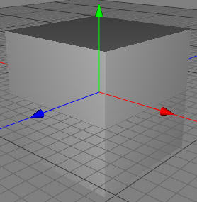
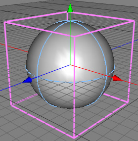

The spherify modifier is a very powerful tool if you want to create any kind of balls (soccer, volley, etc.). See the soccerball tutorial for a practical usage of the spherify modifier.
 
Properties